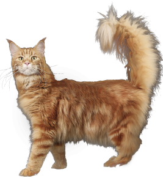

Шерсть
Мы разработали 8 правил, следуя которым, шерсть вашего кота всегда будет блестящей, мягкой и послушной
Все представители нашего питомника имеют ветеринарный паспорт с отметками о прививках и документ с родословной


Мейн-Кун - это порода, которая вызывает к себе уважение. Приобретая в свой дом этого питомца, вы получите умное животное, которому нет равных
Приобретая животное в нашем питомнике, вы получите
Мы разработали 8 правил, следуя которым, шерсть вашего кота всегда будет блестящей, мягкой и послушной
Владельцам котов необходимо регулярно осматривать ушки и глазасвоих питомцев, ведь это может быть признаками заболевания
Нужно ли стричь когти? Это мы и выясним, плюс ко всему расскажем как подобрать идеальную когтеточку
В нашем питомнике существует два подхода: натуральное питание и питание промышленными кормами, но выбирать только вам
Все сотрудники нашего питомника дипломированые специалисты в области фелинологии и ветеринарии

Наш питомник занимается разведением Мейн-Кунов на протяжениие 15 лет. Мы в ответе за каждого приобретенного вами питомца
Мы ответим на самые популярные ваши вопросы
С какого возраста можно забирать котенка из питомника?
Есть важная причина, почему котенка стоит забирать домой только после трех месяцев, — это вакцинация. Первые прививки животному делают в возрасте 8 недель. Ревакцинация проводится через 3–4 недели. То есть котенок, покидающий дом позднее 12 недель, максимально защищен от различных вирусов и инфекций. Так что, чтобы в дома появился психически и физически здоровый котенок, игривый, жизнерадостный, самостоятельный и воспитанный, не спешите забирать его от кошки-мамы раньше трех месяцев.
Как зарезервировать котенка?
Можно ли купить кота, если я живу в другом городе?
Как подготовить дом к приему нового питомца?
Я выражаю огромную благодарность вашему питомнику. Мой Феликс невероятно умен и воспитан. Огромным плюсом питомника является возможность консультироваться в любое время
24 мая 2018